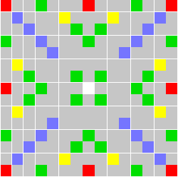
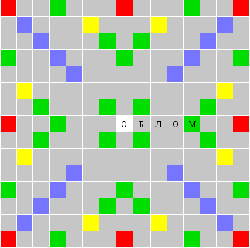
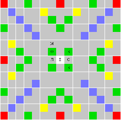
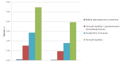

Доброго времени суток, хабр!
В этой статье я расскажу о том, как я создавал искусственный интеллект для игры Эрудит. Подробности под катом.
Эрудит — отечественный аналог всемирно известной игры Scrabble — настольной игры, в которую могут играть от 2 до 4 человек, выкладывая слова из имеющихся у них букв в игровое поле. Игровое поле состоит из 15 х 15, то есть 225 клеток, на которых участники игры составляют слова. Каждое составленное слово приносит очки в зависимости от ценности используемых букв и клеток поля.
Поле для игры Эрудит выглядит так:

Рисунок 1. Поле для игры
Обычно правила оговариваются игроками до начала игры, но имеются некоторые общепринятые правила игры:
Прежде чем разрабатывать алгоритм для генерации хода, необходимо разобраться с тем, какие слова и где можно расположить на поле. Для этого достаточно найти как можно построить все возможные слова по горизонтали поля – построение по вертикали получается аналогично.
Введем два определения:
Рисунок 2. Рассматриваемый ряд
Рассмотрим ряд изображенный на рисунке выше. Необходимо найти все слова, которые можно построить в этом ряду. По правилам игры любое слово должно включать в себя уже имеющуюся букву из ряда. Тогда места, где можно сформировать слово – это пустые клетки, смежные с уже занятыми клетками. Назовем эти клетки точками привязки (англ. acnhor). В данном ряду существует пять точек привязки, которые выделены красным цветом на рисунке ниже.
Как только все точки привязки найдены, необходимо найти возможное количество букв префикса для точек привязки, которые будут формировать слово. Если соседняя слева от точки привязки клетка занята, то она используется как часть префикса составляемого слова. В этом случае возможное количество букв префикса фиксировано. Если же эта клетка пуста, то префикс формируется из букв игрока и тогда количество букв префикса ограничено расстоянием до ближайшей слева непустой или являющейся точкой привязки клетки.
Рисунок 4. Возможное количество букв префикса
Для каждой клетки, являющейся точкой привязки – ищем все возможные слова следующим образом:
Пример
В ходе работы алгоритма может быть найдено слово "КОРАБЛЬ" для точки привязки 4, если у игрока имеются буквы "Б" и "Ь". В этом случае префиксом будет "КОРА", суффикс будет построен при помощи двух букв игрока и буквы "Л" на поле
Теперь, имея способ нахождения всех слов на поле, можно перейти непосредственно к описанию алгоритмов генерации хода.
Я выбрал три алгоритма генерации хода: алгоритм выбора максимального значения, метод полного перебора, метод альфа-бета отсечения.
На каждой итерации метода ищется слово, которое принесет большее количество очков, чем остальные. После нахождения этого слова оно выкладывается на поле и поиск выполняется снова для новой позиции и нового набора букв в руке до тех пор, пока на каком-то шаге множество найденных слов не будет пусто.
Основной проблемой данного алгоритма является то, что полученный набор слов не обязательно будет самым лучшим ходом в данной позиции с точки зрения количества очков, которые он принесет.
Пример
На поле установлена начальная позиция, то есть на поле не размещено еще ни одного слова, на руках игрока имеются следующие буквы: ОБЛМЕОБ. В результате первой итерации алгоритма добавится слово «ОБЛОМ». В результате на руках у игрока останутся буквы Е и Б из которых уже не составить ни одного слова в новой позиции на рисунке ниже:

Рисунок 1.1. Результат работы алгоритма.
Этот ход принесет игроку 11 очков.
Однако, лучший, с точки зрения количества очков, ход в данной позиции является ход, изображенный на рисунке ниже:

Рисунок 1.2. Лучший ход.
Данный ход принесет игроку 38 очков — 23 очка за составленные слова и 15 бонусных за использование всех букв, что в 3,5 раза больше, чем указанный выше ход.
Второй метод генерации хода – это полный перебор. Полный перебор — метод поиска решения исчерпыванием всевозможных вариантов. Вначале ищутся все слова, которые можно составить на поле в данной позиции. Затем, для каждой новой позиции и новых букв в руке, получаемых размещением данного слова на поле, повторяются предыдущие действия. Так продолжается до тех пор, пока множество составляемых слов не будет пустым.
В итоге работы метода будут рассмотрены все возможные ходы, которые может сделать игрок в данной позиции. Среди этих ходов выбирается тот, который дает наибольшее количество очков.
Основная проблема метода – скорость. С целью увеличения скорости метода можно запоминать повторяющиеся в ходе размещения слов позиции и буквы на руке, то есть использовать динамическое программирование.
Минимакс — правило принятия решений для минимизации возможных потерь, которых нельзя предотвратить при развитии событий по наихудшему для игрока сценарию. Улучшением данного метода является его модификация – метод альфа-бета отсечения. В основе метода альфа-бета отсечения лежит идея, что оценивание ветви дерева поиска может быть досрочно прекращено, если было найдено, что для этой ветви значение оценивающей функции в любом случае хуже, чем вычисленное для предыдущей ветви.
Алгоритм метода заключается в следующем: сначала ищутся все возможные ходы в данной позиции. Затем, для получившихся позиций ищутся все возможные ходы соперником в новой позиции. Эти действия повторяются ровно столько раз, какова глубина анализа начальной позиции. В получившемся дереве позиций ищется такой ход, что разница очков между игроком и соперника будет максимальной.
Основной минус этого метода заключается в том, что на протяжении почти всей игры буквы соперника неизвестны. Поэтому использовать этот алгоритм имеет смысл только в конце игры — когда использованы все буквы, кроме букв на руках игроков.
Для реализации я использовал язык программирования Java. Словарь состоял из 12 тысяч слов, в программе был представлен в виде обычного Set'a.
Среднее время генерации представлено на диаграмме ниже:

Рисунок 5. Диаграмма времени генерации
Выборка исследования включала в себя 100 различных последовательностей появления букв, выдаваемых игрокам (по принципу стека). В итоге было рассмотрено примерно 1500 различных комбинаций букв на руке и позиций.
Однако выигрыш по времени генерации повлек за собой проигрыш по очкам: алгоритм выбора максимального значения в среднем приносит игроку порядка 30 очков, в то время как остальные методы — порядка 60 очков.
К сожалению, из рассмотрения были исключены следующие пункты:
{kind=link}
{kind=link}
{kind=link}
{kind=link}
{kind=link}
{kind=link}
{kind=link}